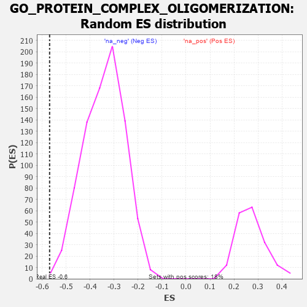

| | | Dataset | 7d |
| Phenotype | NoPhenotypeAvailable |
| Upregulated in class | na_neg |
| GeneSet | GO_PROTEIN_COMPLEX_OLIGOMERIZATION |
| Enrichment Score (ES) | -0.56947726 |
| Normalized Enrichment Score (NES) | -1.6729908 |
| Nominal p-value | 0.001222494 |
| FDR q-value | 0.051240783 |
| FWER p-Value | 0.986 |
Table: GSEA Results Summary
 Fig 1: Enrichment plot: GO_PROTEIN_COMPLEX_OLIGOMERIZATION
Fig 1: Enrichment plot: GO_PROTEIN_COMPLEX_OLIGOMERIZATION
Profile of the Running ES Score & Positions of GeneSet Members on the Rank Ordered List
| PROBE | GENE SYMBOL | GENE_TITLE | RANK IN GENE LIST | RANK METRIC SCORE | RUNNING ES | CORE ENRICHMENT | | 1 | ADCY8 | | | 124 | 1.418 | 0.0190 | No |
| 2 | JMJD6 | | | 553 | 0.613 | -0.0201 | No |
| 3 | KCND2 | | | 617 | 0.590 | -0.0136 | No |
| 4 | UGDH | | | 764 | 0.540 | -0.0189 | No |
| 5 | CPSF6 | | | 778 | 0.538 | -0.0074 | No |
| 6 | BLM | | | 804 | 0.531 | 0.0024 | No |
| 7 | KCTD6 | | | 1213 | 0.444 | -0.0382 | No |
| 8 | CUTC | | | 1593 | 0.375 | -0.0769 | No |
| 9 | MICU1 | | | 1954 | 0.313 | -0.1147 | No |
| 10 | KCNC2 | | | 2075 | 0.295 | -0.1227 | No |
| 11 | GNMT | | | 2261 | 0.266 | -0.1395 | No |
| 12 | OXA1L | | | 2355 | 0.252 | -0.1451 | No |
| 13 | MIF | | | 2357 | 0.252 | -0.1391 | No |
| 14 | CHP1 | | | 3089 | 0.138 | -0.2280 | No |
| 15 | KCTD3 | | | 3291 | 0.107 | -0.2508 | No |
| 16 | KCTD7 | | | 3417 | 0.088 | -0.2644 | No |
| 17 | SPAST | | | 3801 | 0.027 | -0.3121 | No |
| 18 | VPS35 | | | 3989 | -0.006 | -0.3356 | No |
| 19 | OPA1 | | | 4330 | -0.065 | -0.3769 | No |
| 20 | LETM1 | | | 4644 | -0.127 | -0.4133 | No |
| 21 | KCTD5 | | | 5141 | -0.235 | -0.4702 | No |
| 22 | ATL2 | | | 5214 | -0.249 | -0.4732 | No |
| 23 | MPP2 | | | 5367 | -0.288 | -0.4854 | No |
| 24 | GRIN1 | | | 5381 | -0.291 | -0.4799 | No |
| 25 | KCNC4 | | | 5414 | -0.298 | -0.4766 | No |
| 26 | EHD1 | | | 5560 | -0.336 | -0.4867 | No |
| 27 | CLYBL | | | 5619 | -0.350 | -0.4855 | No |
| 28 | EVL | | | 6052 | -0.490 | -0.5281 | No |
| 29 | EHD4 | | | 6227 | -0.545 | -0.5367 | No |
| 30 | TRPM4 | | | 6390 | -0.612 | -0.5423 | No |
| 31 | GLRA3 | | | 6469 | -0.648 | -0.5363 | No |
| 32 | ATL3 | | | 6619 | -0.723 | -0.5374 | No |
| 33 | CBY1 | | | 6874 | -0.851 | -0.5487 | Yes |
| 34 | HCN1 | | | 6895 | -0.865 | -0.5301 | Yes |
| 35 | DISP1 | | | 6928 | -0.887 | -0.5124 | Yes |
| 36 | DNM1L | | | 6963 | -0.913 | -0.4944 | Yes |
| 37 | ATL1 | | | 7062 | -0.972 | -0.4830 | Yes |
| 38 | SYT1 | | | 7148 | -1.033 | -0.4686 | Yes |
| 39 | SYCP1 | | | 7295 | -1.167 | -0.4585 | Yes |
| 40 | TRPM1 | | | 7324 | -1.197 | -0.4328 | Yes |
| 41 | KCNB1 | | | 7444 | -1.327 | -0.4154 | Yes |
| 42 | TRPM3 | | | 7544 | -1.461 | -0.3922 | Yes |
| 43 | TRPA1 | | | 7625 | -1.608 | -0.3630 | Yes |
| 44 | PKD1 | | | 7628 | -1.611 | -0.3239 | Yes |
| 45 | MCU | | | 7644 | -1.637 | -0.2858 | Yes |
| 46 | TRPM6 | | | 7645 | -1.637 | -0.2459 | Yes |
| 47 | TRPM2 | | | 7680 | -1.712 | -0.2083 | Yes |
| 48 | BOK | | | 7715 | -1.817 | -0.1682 | Yes |
| 49 | ASIC1 | | | 7726 | -1.838 | -0.1246 | Yes |
| 50 | TRPM7 | | | 7761 | -1.936 | -0.0816 | Yes |
| 51 | PKD2 | | | 7822 | -2.167 | -0.0363 | Yes |
| 52 | KCNC1 | | | 7835 | -2.249 | 0.0172 | Yes |
Table: GSEA details [plain text format]

Fig 2: GO_PROTEIN_COMPLEX_OLIGOMERIZATION: Random ES distribution
Gene set null distribution of ES for GO_PROTEIN_COMPLEX_OLIGOMERIZATION